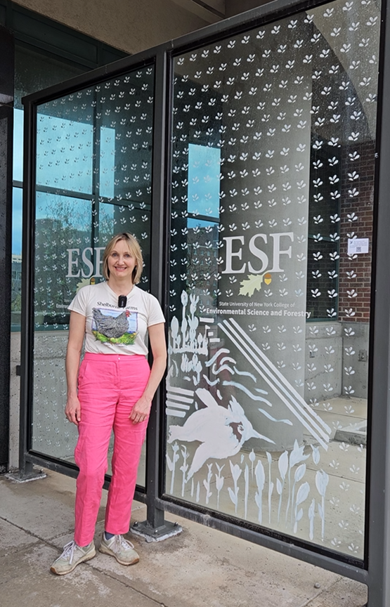
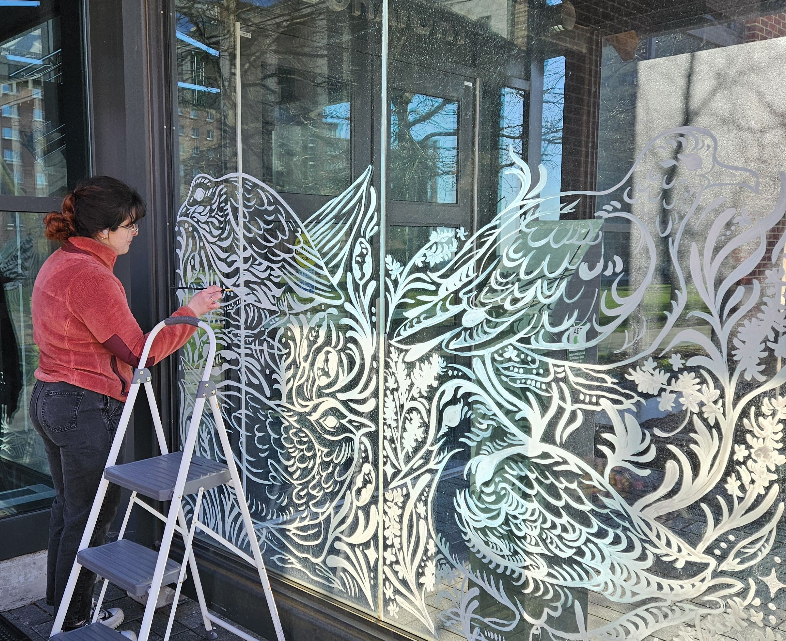
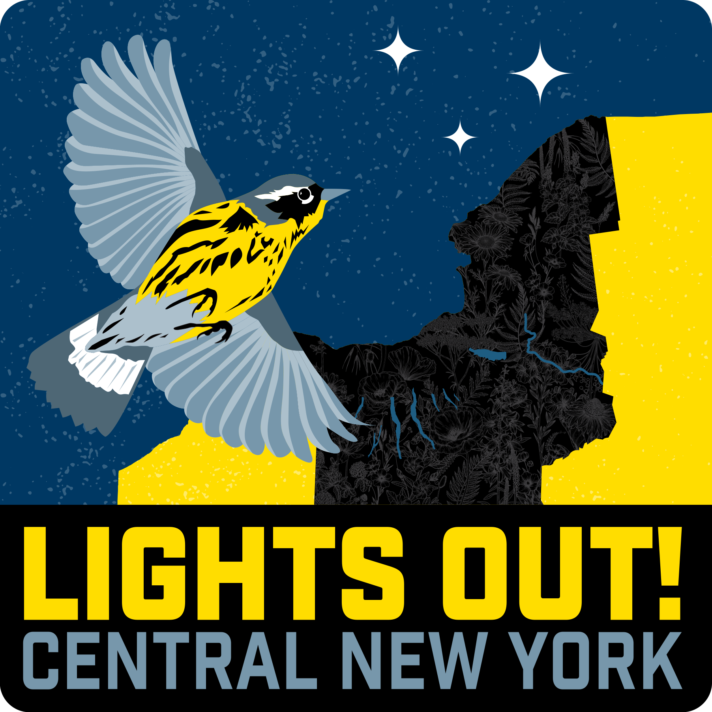
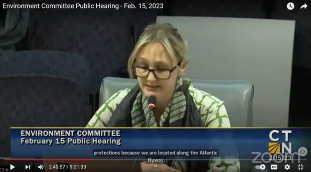

Meredith Barges, MA, MDiv, PhD (ABD)

Cinque Terre

Green Forest

Northern Lights

Mountains
Presentations & Speaking Engagements
- MA Liberal Arts College Green Living Seminar, “How Laws Protecting Birds Strengthen Human Communities," North Adams, MA, April 8, 2026 ~ Link
- Rochester Institute of Technology, Guest Judge, “SMASH THE CRASH: An Environmental Initiative to End Bird-Window Collisions in Rochester," April 10, 2026 ~ Link
- Humane Canada 2026 Animal Summit, “Bird-friendly Toronto: How advocacy led to a municipal policybreakthrough in bird conservation," Whistler, B.C., April 20-21, 2026 Link
- Better Building By Design VT, “Bird-Friendly Building Design," Burlington, VT, May 6-7, 2026 ~ Link
- American Ornithological Society Annual Conference, “Linking Science & Empathy in Successful Bird-friendly Building Advocacy," Amherst, MA, August 3-7, 2026 ~ Link
- Environment for the Americas World Migratory Bird Day, “Policy for Birds,” October 16, 2025 ~ Link
- 13th Annual Nature-Society Workshop, “Bird-friendly Toronto,” October 3, 2025
- AIA Vermont, “Bird-friendly Design for Architects,” September 18, 2025 ~ Recording
- Onondaga Audubon Society, “The Beauty of Bird Friendly Design,” September 9, 2025 ~ Recording
- Forum for Contemplative Ecology, “Migratory Birds & the Night Sky,” August 4, 2025 ~ Recording
- Audubon NY & CT Spring Council Meeting, “Lights Out for Birds,” April 4-6, 2025
- Lights Out Greenwich, “The Consequences of Light Pollution,” June 7, 2024 ~ Recording
- Audubon Rhode Island, “Bird-Friendly Building Policy: A Look at New U.S. City & State Laws,” February 4, 2024 ~ Recording
- Connecticut Audubon, “Making Connecticut’s Buildings Safer for Birds,” January 18, 2024 ~ Recording
- AIA CT Webinar, “Bird-Friendly Building: Designing Safer Buildings for Birds,” November 7, 2023 ~ Link
- Menunkatuck Audubon Society, “The Wonders and Perils of Spring Bird Migration in the Northeast,” May 12, 2024 ~ Recording
- Valley Short Community TV's A Slice of Life, Episode 9 - “Lights Out,” June 12, 2023 ~ Recording
- Liz Wexler Show, “Lights Out! Help save the birds!,” April 20, 2023 ~ Recording
- CT General Assembly Environmental Committee, Public Testimony, February 15, 2023 ~ Recording
Visit my Linkedin profile at: https://www.linkedin.com/in/meredithbarges/